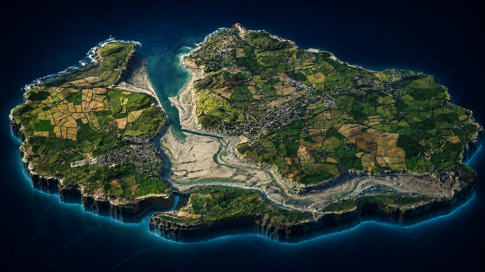
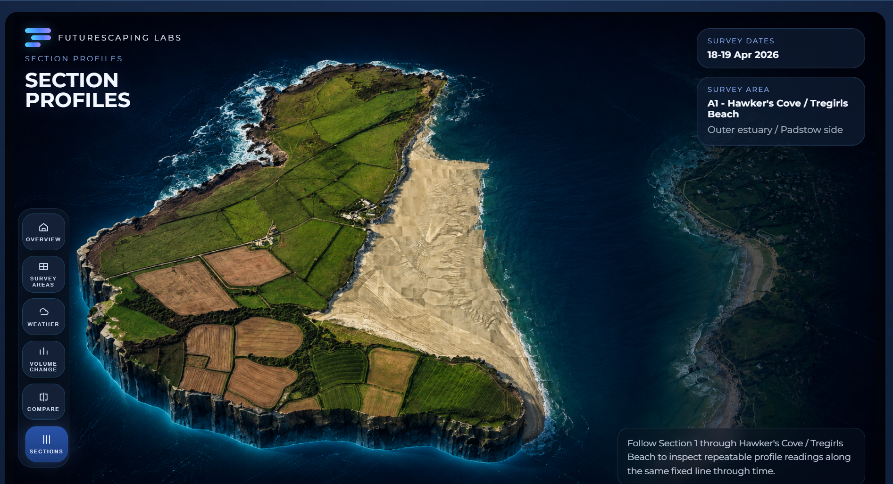
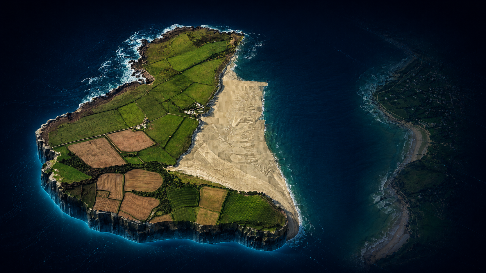
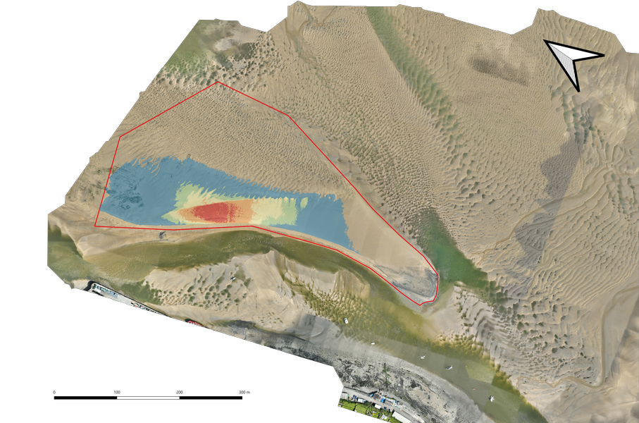

FutureScaping Labs
Monitoring system
Repeatable coastal surveys
Monitoring
System
Visual change monitoring for coastal landscapes, repeat surveys, section evidence and client-ready environmental context.
An imagery-first estuary monitoring workflow built to inspect repeat surveys, explain visible coastal change and give clients a clear route from overview to detailed evidence.
Survey dates
18-19 Apr 2026
Structured around fixed screenshots and local imagery for a stable, presentation-ready walkthrough.


What this demo shows
From estuary overview to evidence-led explanation
This demo is based on the full FutureScaping monitoring system and is designed to show how repeat drone surveys can move from regional context into specific monitored areas, comparison views and section evidence without losing the visual thread.
Client purpose
Explain what has changed
The viewer is built to help teams inspect imagery, compare rounds through time and make visible coastal change easier to explain in meetings.
Core outputs
Ortho, DSM, contours and sections
Each monitored area can resolve to aerial imagery, height models, contour exports, section overlays and CSV-backed profile evidence.
Why it matters
Track bars, channels and exposed sediment
Repeating the same survey structure helps reveal how material is shifting, how quickly it is moving and where the estuary geometry is evolving.
 Overview
Estuary-scale entry point for the survey round, monitored area sequence and system context.
Overview
Estuary-scale entry point for the survey round, monitored area sequence and system context.

Survey Areas Area-level imagery and metadata ready for repeat inspection and client walkthroughs.
Compare Visual comparison views that help show sediment movement, channel shift and local change context.What it shows
Survey dates, fixed sections, local context imagery and quick interpretation panels in one clear route.
Presentation approach
This page uses fixed screenshots and local imagery to keep the monitoring workflow clear, stable and easy to follow.
How it is used
Open with the overview, then move into sections and area panels to show how repeat monitoring can be organised and explained.